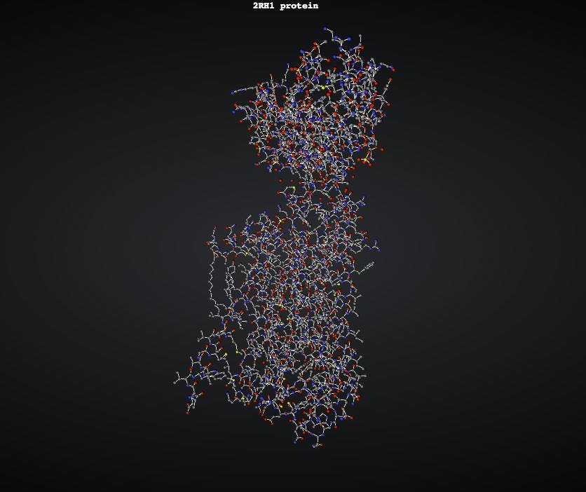
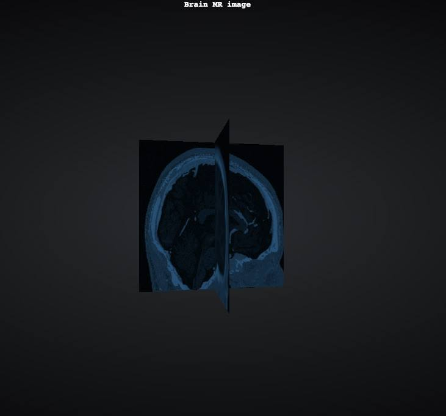

For structural protein analysis, 3D visualization is useful to get an overview of the tertiary stucture of the protein. The visualization gives the user the opportunity to better understand the protein's activity, and to identify any particular domains of interest such as catalityc or regulatory regions which can be used as a active site in pharmaceutical therapies. By clicking the image bellow, you will be able to view the visualisation.
For this particular visualization we have used various features to aid the understanding of the protein structure. For instance a "perspective camera" was used to view the atoms and bonds and give some depth, and size of the molecule. Antother feautre that could have been used was lighting of the scene to again give some depth, and shading of the atoms and bonds. Instead of doing this, an image of a ball was used for each atom, which already depicted some shading. This gives the impression that each atom has a third dimension, and that there is a light source present. In order to navigate the molecule, controls were added, which allowed rotation and translation of the image, as well as movement of the camera position. These were added as a "trackball" feature, so the image could rotate 360 degrees with free movement.
Colouring of different atoms in the protein was also added, which allows further uderstanding of the structure and possible behaviour of the protein itself. The color of an atom depends on its element: C=gray, N=blue, O=red, S=yellow. No Hydrogens were added as this would have been extremley cluttered on such a large molecule.
For the second visualization, brain MR images were put on panels to create a 3D scene. A potential use of this visualization will be the medical field, as the user can be able to select and “play” with the brain slices. This tool helps identify a potential explanation for an illness or even an early diagnosis of a neurological illness. By clicking the image bellow, you will be able to view the visualisation.
Controls were added to manipulate the visualization and allow rotation and change of camera position. This was enable using "orbit controls" to allow camera movement and navigation of the images, without ever turning the brain upsidwdown. Furthermore we added a GUI to allow the viewing of different slices of the image in coronal, axial and sagittal directions. Other features as the light and material were added to allowed easy analysis of the medical image and improve its definition. The material chosen was matt to avoid too much reflection of light, which may have distorted the image. Point lights was added in three directions to ensure visibility of the imagesat all angles.